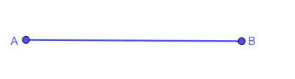
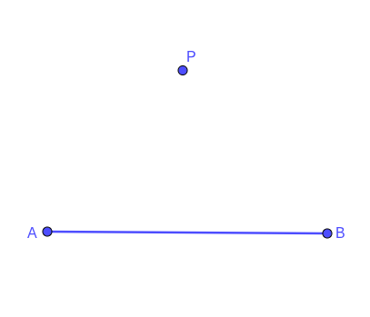
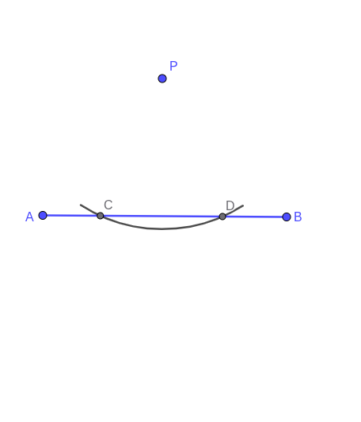
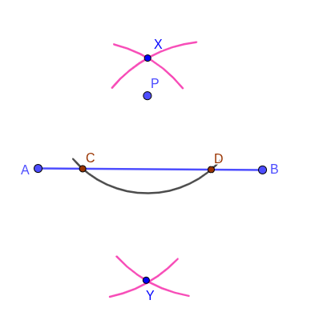
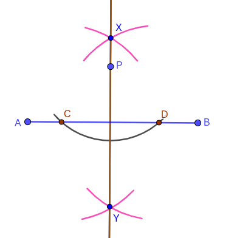

Activity 3.1.1.
\(\textbf{Work in pairs }\)
\(\textbf{What you need:}\) A ruler, A Compass and A pencil.
-
Draw a line segment \(AB\) as shown below.
-
Mark a point \(P\) outside the line as shown below.
-
With the compass point on \(P\text{,}\) draw an arc that cuts the line \(AB\) and label them as \(C\) and \(D\) as shown below.
-
(a).Place the compass on point \(C\) and draw an arc below and above the line.(b). Similarly, Place the compass on point \(D\) and draw an arc below and above the line. Mark the intersection points of the arcs as \(X\) and \(Y\) as shown below.
-
Use a ruler to draw a line from \(X\) to \(Y\text{.}\) What do you notice?